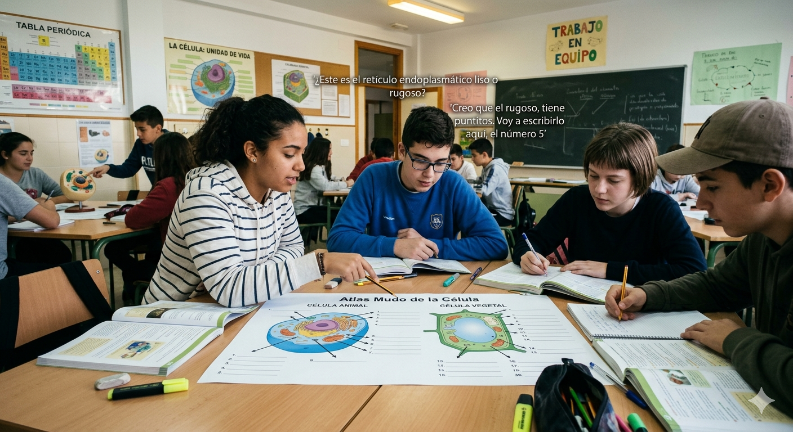

Actividad 4

Dominar el estudio de la célula a través de un atlas mudo no es solo un ejercicio de memoria, sino una herramienta fundamental para comprender la arquitectura de la vida. Al identificar visualmente la estructura de las células procariotas y eucariotas (animales y vegetales), el alumnado logra integrar cómo la morfología celular determina su función biológica. El reconocimiento preciso de cada orgánulo —como las mitocondrias para la energía, el núcleo para la herencia o los cloroplastos para la fotosíntesis— permite que el estudiante deje de ver conceptos aislados y empiece a interpretar la célula como una maquinaria perfectamente coordinada. Esta destreza visual es el primer paso crítico para avanzar con éxito hacia disciplinas más complejas como la histología, la genética o la fisiología médica.
Para ello, la actividad consiste en la cumplimentación y entrega del atlas mudo que aparece adjunto como PDF debajo de los distintos tipos de células y sus orgánulos.
Se realizará por parejas (agrupamiento).
La duración aproximada de la actividad es de 30 minutos.
Como herramientas se necesitan la ficha del atlas mudo en cuestión que se adjunta debajo, y que también está disponible en formato digital en Google Classroom y en Padlet.
La actividad se llevará a cabo en el aula. (Ubicación).